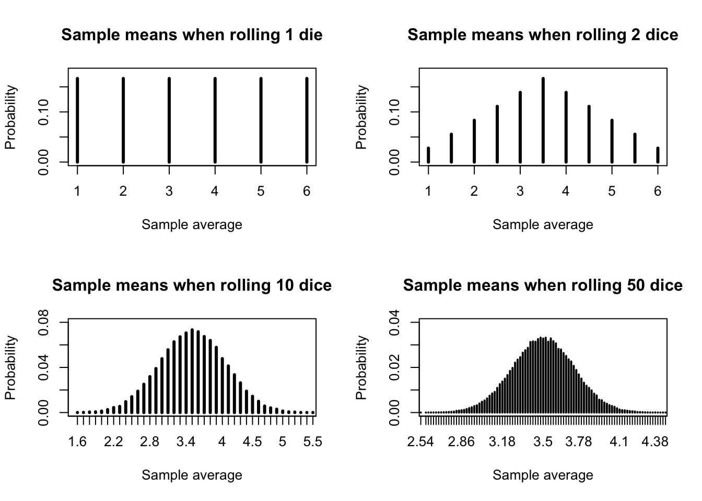

By now, you are hopefully used to thinking of different populations as following known probability distributions. Perhaps bus waiting times are exponentially distributed, or the number people in Chicago using a payphone right now could be Poisson distributed.
A sample drawn from a population will change each time a new sample is drawn, and therefore the properties of that sample will also change, meaning that those properties are random variables. However, the distribution of the sample property is not the same as the population distribution.
If a population is uniformly distributed, the minimum of each new sample is not itself uniformly distributed (since low numbers will be more common than high numbers).
If a population is Poisson distributed, the variance of each new sample is not Poisson distributed (since Poisson values are integers, and a sample variance can be fractional)
And so on. Perhaps the most important property of any sample is the mean. We would love to know if a sample mean is so small or so large that it casts doubt on our null hypothesis or our distributional assumptions, but we cannot make these calculations if we do not know the supposed distribution of the sample mean.
** Estimating the sample mean distribution as Normal
The true distribution of the sample mean will depend upon both the distribution of the population and the sample size and is often very,very hard to compute. The good news is, we don’t have to compute the exact distribution, because the sample mean of a sample from almost any distribution grows more and more normally distributed as the sample size increases:
Code
#normalization of sample meanspar(mfrow=c(2,2))set.seed(1985)rolls10 <-matrix(sample(1:6,500000,TRUE),ncol=10)avgs10 <-apply(rolls10,1,mean)rolls50 <-matrix(sample(1:6,5000000,TRUE),ncol=50)avgs50 <-apply(rolls50,1,mean)plot(1:6,rep(1/6,6),type='h',lwd=3,ylim=c(0,0.18),main='Sample means when rolling 1 die',ylab='Probability',xlab='Sample average')plot(seq(1,6,0.5),1/6-abs(3.5-seq(1,6,0.5))/18,type='h',lwd=3,ylim=c(0,0.18),main='Sample means when rolling 2 dice',ylab='Probability',xlab='Sample average')plot(table(avgs10)/50000,lwd=3,ylim=c(0,0.08),xlim=c(1.6,5.4),main='Sample means when rolling 10 dice',ylab='Probability',xlab='Sample average')plot(table(avgs50)/100000,lwd=2,ylim=c(0,0.04),xlim=c(2.6,4.4),main='Sample means when rolling 50 dice',ylab='Probability',xlab='Sample average')

Figure 9.1: Sample means approaching normality as sample size increases
The figure above illustrates this principle by considering the sample mean of one or more fair, six-sided dice.
Clearly, when we roll only one die, the “mean” of the sample is just the roll itself, and so it shares the same discrete uniform distribution. All integers 1 through 6 are equally likely.
When we roll two dice, a total of 7 is the most common value, which is the same as a sample mean of 3.5. It would be rare to roll two 1s (sample mean of 1) or two 6s (sample mean of 6). The sample mean forms a discrete triangular distribtion.
When we increase the number of dice to 10 or 50, the distribution of sample means will still be centered at 3.5, but now resembles the bell curve of the Normal distribution. Of course it’s not a Normal curve – since that is a continuous distribution defined at every point, while this is still a discrete distribution.1
You might also notice that the distribution of the sample means has tightened considerably. When rolling just one or two dice, a sample mean of 2 or 5 was fairly common. But when rolling 10 or 50 dice, the sample average would almost never be so low as 2 or so high as 5. As sample size increases, the variance of the sample mean shrinks.
Formal and informal definitions
We can capture this all this behavior with the following rule:
Note
The Central Limit Theorem (CLT): Let \(X\) be a random variable with mean \(\mu\) and finite variance \(\sigma^2\)2, and let \(\boldsymbol{x} = x_1,x_2,\ldots,x_n\) be a sample of independent observations of \(X\). Then,
Where \(\bar{x}\) is the sample mean of \(\boldsymbol{x}\) and \(\Phi(z)\) is the cumulative distribution function of the standard Normal distribution.
In my experience, many students “bounce off” of this theoretical definition without really understanding what it means or why it can be so helpful. Let me rephrase the CLT in slightly less formal terms.
Informal CLT: If your sample is independently drawn from a population with a finite mean and a known variance, then as the sample size increases, your sample mean will be approximately normally distributed around the true population mean. Specifically,
\[\textrm{For large } n, \textrm{and as an approximation,}\;\bar{X} \sim \textrm{Normal}\left(\mu,\frac{\sigma^2}{n}\right)\] Where \(\bar{X}\) represents the random variable of the sample mean, and \(\mu\), \(\sigma^2\), and \(n\) are all the same as in the formal CLT definition above.
The beauty of this result is that it provides an easy way to approximate the probable locations of the true mean of the distribution. When we measure our sample mean, we cannot know how far away the true mean might be. We don’t know whether we have underestimated or overestimated the true mean. But we know that the distance between the true mean and the sample mean is a random variable which is roughly normally distributed, meaning that we can identify reasonable lower and upper bounds on how far the true mean is from our sample means.
The difficulty of this result is that we have to know the true population variance, \(\sigma^2\), in order to use this equation. We wil address this difficulty in the next section.
Example: approximate confidence interval for true mean heights
Earlier, when discussing the nature of parametric inference, I posed the following question:
We observe the heights of ten women, and we assume they represent a sample from a population which is normally distributed. Based on our sample, what are realistic ranges for the unknown mean \(\mu\) and variance \(\sigma^2\)?
Let’s attempt a (partial) answer. We will assume the same ten heights described earlier, measured in centimeters:
\[\boldsymbol{x}=\{170.1,161.6,175.2,166.3,165.6,165.8,152.0,155.8,168.6,154.3\}\] And furthermore, we will assume that a little bird has whispered in our ear that the true variance of the heights of adult women in the United States is 50 cm2.
The sample mean of our heights is 163.53 cm. That’s a good point estimate for the true mean. But how large or small could the true mean be? We might start by calculating a 95% confidence interval, bounded by:
A lower bound where the true mean would be so low that data “this high” or higher would only occur in 2.5% of random samples
An upper bound where the true mean would be so high that data “this low” or lower would only occur in 2.5% of random samples
The CLT greatly simplifies the process of finding these two bounds. We know that the true mean is likely not far from our sample mean. We also know that the distance between the true mean and sample mean is approximately normal, with mean 0 and standard deviation of \(\sigma/\sqrt{n}\). Finally, we know that the upper 2.5% of the normal distribution falls roughly 1.96 standard deviations from the mean (i.e.\(\Phi^{-1}(0.975) \approx 1.96\)). Therefore,
\[\textrm{CI}_{μ,0.95} = \bar{x} \pm z_{0.975}^* \frac{\sigma}{\sqrt{n}} \approx 163.53 \pm 1.96 \cdot \sqrt{50⁄10} \approx [159.15,167.91]\] From our sample of ten women’s heights, we believe that the true mean height of adult women in the United States is between 159.15 and 167.91 cm. Compare this to a 2018 Centers for Disease Control publication that reported a true mean height of 161.7 cm: our sample mean was a little high, but the confidence interval did contain the true parameter!
Visualizer
Choose a distribution and a sample size, and notice whether the approximation of the CLT (in blue) seems accurate or not to the actual distribution of means (in black):
#| '!! shinylive warning !!': |
#| shinylive does not work in self-contained HTML documents.
#| Please set `embed-resources: false` in your metadata.
#| standalone: true
#| viewerHeight: 960
library(shiny)
library(bslib)
myunif <- function(u) qunif(u,min=0,max=6)
mypois <- function(u) qpois(u,lambda=3)
myexp <- function(u) qexp(u,rate=1/sqrt(3))
mygeom <- function(u) qgeom(u,prob=(sqrt(13)-1)/6)
ui <- page_fluid(
tags$head(tags$style(HTML("body {overflow-x: hidden;}"))),
title = "Sample mean distribtions approximated by the CLT",
fluidRow(column(width=6,selectInput("dist", "Distribution",
list(`Uniform(0,6)` = 'myunif', `Poisson(3)` = 'mypois',
`Exponential(0.577)` = 'myexp', `Geometric(0.434)` = 'mygeom'))),
column(width=6,sliderInput("nsamp", "N (sample size)", min=1, max=50, value=5))),
fluidRow(column(width=12,plotOutput("distPlot1"))))
server <- function(input, output) {
samp <- reactive(eval(call(input$dist,u=runif(2e4*input$nsamp))))
sampmeans <- reactive(rowMeans(matrix(samp(),ncol=input$nsamp)))
output$distPlot1 <- renderPlot({
(h <- hist(sampmeans(),main='Histogram of 20,000 sample means',
xlab='Sample mean',ylab='Frequency'))
points(h$mids,2e4*(pnorm(h$breaks[-1],mean(sampmeans()),sqrt(3)/sqrt(input$nsamp)) -
pnorm(h$breaks[-length(h$breaks)],mean(sampmeans()),sqrt(3)/sqrt(input$nsamp))),
col='#0000ff')
legend(x='topright',legend='CLT Approx',pch=1,col='#0000ff',bty='n')})
}
shinyApp(ui = ui, server = server)
For example, with 10 dice, the sample average could be 3.6 or 3.7 but never 3.65↩︎
Note: though I use \(\mu\) and \(\sigma^2\) to denote the mean and variance, \(X\) does not have to be Normally distributed↩︎